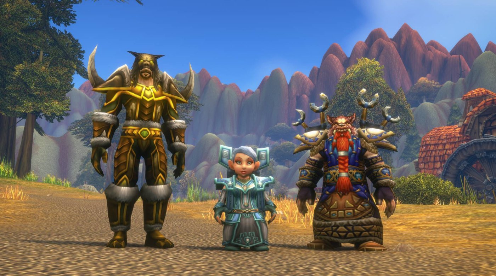

Équilibrage du 11 novembre : démoniste, familiers et chaman
7 novembre 2026
Blizzard annonce ses premiers changements d'équilibrage de classes pour WoW Forever, prévus avec la maintenance du mercredi 11 novembre en Europe (le mardi 10 aux États-Unis). Trois classes sont concernées.

Démoniste Affliction
Aujourd'hui, Calvaire (Wrack) fait mieux tout seul que les autres sorts. Blizzard veut que Drain de vie, Corruption et Malédiction d'agonie restent utiles à côté. Les dégâts totaux de l'Affliction ne doivent pas changer : c'est la rotation qui change, pas la puissance.
Familiers du chasseur et du démoniste
Les familiers sont moins résistants que prévu. Blizzard va revoir leurs caractéristiques pour qu'ils tankent à peu près comme dans Classic Era. Une bonne nouvelle pour le leveling avec le marcheur du Vide ou un familier de chasseur. Plus de détails sur notre page Familiers du démoniste.
Chaman Amélioration
La Force doit devenir la meilleure statistique, devant l'Intelligence et la puissance des sorts. Blizzard conseille de commencer dès maintenant à garder les pièces avec de la Force et de la puissance d'attaque.
Sources : annonce de Blizzard (6 novembre 2026), résumée par foreverchanges.pro.